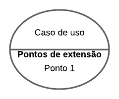

Casos de uso
1. Introdução
O diagrama de casos de uso é uma ferramenta gráfica de modelagem utilizada na engenharia de software para representar as funcionalidades de um sistema a partir da perspectiva do usuário. É uma das técnicas mais utilizadas para elicitação e documentação de requisitos funcionais, pois permite identificar os atores envolvidos no sistema e descrever como eles interagem com o mesmo.
2. Metodologia
Para a realização da atividade de diagramação no artefato, foi utilizada a ferramenta de representação de diagramas LucidChart. O diagrama de casos de uso irá demonstrar os casos de uso principais do sistema, que são representados por elipses, e os atores envolvidos no sistema, que são representados por retângulos. Os casos de uso são conectados aos atores através de linhas, que indicam a interação entre eles. Além disso, é possível incluir descrições detalhadas de cada caso de uso, com informações sobre pré-condições, pós-condições, fluxos alternativos e exceções.
3. Representação do Diagrama UML - Casos de Uso
3.1 Ator(es)
Atores são caracterizados por serem os usuários do sistema ou um tipo de usuário[1]. Sua representação nos diagramas pode ser vista na figura 1.
Figura 1: Ator
Fonte: Autor, 2023
3.2 Caso de uso
Caso de uso é uma tarefa ou funcionalidade realizada pelo ator[1]. Sua representação nos diagramas pode ser vista na figura 2.
Figura 2: Caso de uso
Fonte: Autor, 2023
3.3 Cenário
Cenário é uma sequência de eventos que estão acontecendo enquanto o usuário interage com o sistema[1]. Sua representação nos diagramas pode ser vista na figura 3.
Figura 3: Cenário
Fonte: Autor,2023
3.4 Pontos de extensão
Ponto de extensão é a especificação de um caso de uso base, sendo referido por um relacionamento de extensão entre o caso de uso e base e o de extensão[2]. Sua representação nos diagramas pode ser vista na figura 4.

Figura 4: Pontos de extensão
Fonte: Autor, 2023
3.5 Comunicação
É o procedimento que liga o ator ao caso de uso, como demonstrado na Figura 5, possui variações. A comunicação apresenta duas notações de relacionamentos:
Include: Relação de um caso de uso que necessita executar o caso de uso através da chamada de outro caso de uso[1]. - Notação na diagramação: <<include>>
Extend: Relação de um caso de uso que executa sem necessidade de outro caso de uso, entretanto, pode ter novas etapas. Sendo assim o caso de uso extendido pode ou não ser executado[3]. - Notação na diagramação: <<extend>>

Figura 5: Comunicação
Fonte: Autor, 2023
4. Diagramas de Casos de Uso
Na figura 6 observa-se o diagrama geral dos casos de uso do sistema.
Figura 6: Caso de uso geral
Fonte: Autor, 2023
UC01 - Realizar Cadastro
Na figura 7 observa-se o diagrama de caso de uso referente ao cadastro. Abaixo na tabela 1 se encontra a especificação do diagrama.

Figura 7: Realizar cadastro
Fonte: Autor, 2023
| UC01 | Realizar cadastro |
|---|---|
| Descrição | Funcionalidade que permite o cadastro do usuário na aplicação. |
| Ator(es) | Usuário. |
| Pré-Condições | O Usuário não deve estar logado na aplicação. |
| Pós-Condições | O Usuário deve acessar conseguir acessar a conta cadastrada. |
| Fluxo Principal | [FP01] Realizar cadastro 1. O Usuário seleciona " Ainda não tem conta? Clique aqui". 2. O Usuário preenche os dados cadastrais. 3. O Sistema valida os dados preenchidos. 4. O Sistema autentica o usuário. 5. O Usuário é redirecionado para a página de Login. |
| Fluxo(s) Alternativo(s) | - |
| Ponto(s) de Extensão | [PE01] Efetuar Login 1. O Usuário acessa a página de Login. |
| Fluxo(s) de Exceção | [FE01] Dados cadastrais inválidos 1. O Sistema apresenta uma mensagem informando os campos inválidos. |
Tabela 1: Realizar cadastro
Fonte: Autor, 2023
UC02 - Efetuar Login
Na figura 8 observa-se o diagrama de caso de uso referente ao login. Abaixo na tabela 2 se encontra a especificação do diagrama.

Figura 8: Efetuar Login
Fonte: Autor, 2023
| UC02 | Efetuar Login |
|---|---|
| Descrição | Funcionalidade que possibilidade o usuário efetuar login |
| Ator(es) | Usuário e Sistema(Aplicação Petz) |
| Pré-Condições | O Usuário não deve estar logado na aplicação |
| Pós-Condições | O Usuário estará logado na aplicação O Usuário tem acesso as funcionalidades que requerem login |
| Fluxo Principal | [FP02] Efetuar Login 1. O Usuário inicia a aplicação. 2. O Usuário preenche com Email ou CPF e com a senha o campo de login. 3. O Usuário clica em "Entrar". 4. O Sistema autentica o usuário. 5. O Sistema redireciona o usuário para a aplicação principal. |
| Fluxo(s) Alternativo(s) | [FA01] Acessar rapidamente 1. O Usuário seleciona a opção "Receber código de acesso rápido". 2. O Usuário escolhe a forma de receber o código(Email ou SMS). 3. O Usuário digita o código de verificação para a autenticação. 4. O Sistema autentica o usuário. 5. O Sistema redireciona o usuário para a aplicação principal. |
| Ponto(s) de Extensão | [PE02] Alterar Senha 1. O Usuário clica em " Esqueci minha senha". 2. O Usuário escolhe a forma de recuperar a senha(Email ou SMS). 3. O Sistema envia um código de recuperação através do meio escolhido. 4. O Usuário preenche o campo com o código de vericação. 5. O Usuário altera a senha. [PE03] Realizar Cadastro 1. UC01 |
| Fluxo(s) de Exceção | [FE02] Dados inválidos 1. O Sistema apresenta uma mensagem de alerta, avisando que os dados preenchidos são inválidos(Email, CPF/CPNJ ou senha). |
Tabela 2: Efetuar Login
Fonte: Autor, 2023
UC03 - Compra de produto
Na figura 9 observa-se o diagrama de caso de uso referente à compra de um produto. Abaixo na tabela 3 se encontra a especificação do diagrama.
Figura 9: Compra de produto
Fonte: Autor, 2023
| UC03 | Compra de produto |
|---|---|
| Descrição | Funcionalidade que permite efetuar a compra de produtos |
| Ator(es) | Usuário e Sistema(Aplicação Petz) |
| Pré-Condições | O Usuário deve estar logado na aplicação. |
| Pós-Condições | O Usuário deve ter o pedido realizado. |
| Fluxo Principal | [FP03] Compra de produto 1. O Usuário seleciona item. 2. O Usuário adiciona o item ao carrinho. 3. O Usuário preenche o campo de CEP. 4. O Usuário seleciona como receber o produto(Retirar na loja ou solicitar envio). 5. O Sistema redireciona o usuário para a página de pagamento. |
| Fluxo(s) Alternativo(s) | - |
| Ponto(s) de Extensão | [PE04] Inserir Cupom 1. O Usuário insere um cupom no campo válido. 2. O Sistema valida o cupom. 3. O Sistema retorna o novo valor do produto. |
| Fluxo(s) de Exceção | [FE03] Produto Esgotado 1. O Sistema informa que o item não está disponível para compra. [FE04] Cupom inválido 1. O Sistema informa que o cupom não é válido. |
Tabela 3: Compra de produto
Fonte: Autor, 2023
UC04 - Efetuar Pagamento
Na figura 10 observa-se o diagrama de caso de uso referente ao pagamento. Abaixo na tabela 4 se encontra a especificação do diagrama.

Figura 10: Pagamento
Fonte: Autor, 2023
| UC04 | Efetuar Pagamento |
|---|---|
| Descrição | Funcionalidade que permite a realização de pagamentos na aplicação |
| Ator(es) | Usuário e Sistema(Aplicação Petz) |
| Pré-Condições | O Usuário deve estar logado na aplicação. O Usuário deve ter realizado um pedido. |
| Pós-Condições | O Usuário deve ter realizado o pagamento do pedido. O Usuário deve se capaz de acomapanhar o pedido. |
| Fluxo Principal | [FP04] Efetuar Pagamento 1. O Usuário deve ter escolhido o meio de entrega(Retirar na loja ou solicitar envio). 2. O Usuário seleciona o método de pagamento. 3. O Usuário realiza o pagamento. 4. O Sistema autentica o pagamento. 5. O Usuário pode acompanhar o pedido. |
| Fluxo(s) Alternativo(s) | - |
| Ponto(s) de Extensão | [PE05] Retirar na loja 1. O Sistema não adiciona taxa de entrega. 2. O Sistema sinaliza a loja que pode ocorrer a retirada. [PE06] Solicitar envio 1. O Usuário adiciona o endereço de envio. 2. O Sistema retorna o valor de envio. |
| Fluxo(s) de Exceção | [FE05] Pagamento Inválido 1. O Sistema informa uma mensagem de erro sobre a situação do pagamento. |
Tabela 4: Efetuar pagamento
Fonte: Autor, 2023
UC05 - Consultar conta
Na figura 11 observa-se o diagrama de caso de uso referente à consulta de conta. Abaixo na tabela 5 se encontra a especificação do diagrama.
Figura 11: Conta
Fonte: Autor, 2023
| UC05 | Consultar conta |
|---|---|
| Descrição | Funcionalidade que permite consultar os dados atrelados a conta do usuário. |
| Ator(es) | Usuário e Sistema(Aplicação Petz). |
| Pré-Condições | O Usuário deve estar logado na aplicação. |
| Pós-Condições | O Usuário visualiza as informações pretendidas. O Usuário edita as informações pretendidas. O Usuário pode sair da conta. |
| Fluxo Principal | [FP05] Consultar dados da conta 1. O Usuário seleciona "Minha Conta". 2. O Usuário seleciona a opção em "Meus dados" (cadastro, alterar senha, endereço, pets, favoritos, carteira). 3. O Usuário visualiza ou edita os dados. |
| Fluxo(s) Alternativo(s) | [FA02] Acompanhar pedido 1. O Usuário seleciona "Acompanhar pedido". 2. O Sistema retorna as informações dos pedidos realizados. [FA03] Editar assinaturas 1. O Usuário seleciona "Editar assinaturas". 2. O Sistema retorna as assinaturas vigentes. 3. O Usuário seleciona a assinatura para editar. [FA04] Serviços 1. O Usuário seleciona entre "Banho e Tosa" e "Lojas". 2a. O Usuário seleciona o agendamento de "Banho e Tosa" 2b. O Usuário visualiza as lojas Petz. |
| Ponto(s) de Extensão | [PE07] Código de verificação 1. O Sistema envia o código de verificação para alterar a senha. |
| Fluxo(s) de Exceção | [FE06] Edição de dados inválida 1. O Usuário recebe uma mensagem de erro ao preencher dados inválidos. [FE07] Falta de dados obrigatórios 1a. O Sistema apresenta uma mensagem explicitando como inválido um campo cadastral obrigatório faltante. |
Tabela 5: Consultar conta
Fonte: Autor, 2023
UC06 - Atendimento
Na figura 12 observa-se o diagrama de caso de uso referente ao atendimento e comunicação com a Petz. Abaixo na tabela 6 se encontra a especificação do diagrama.
Figura 12: Atendimento
Fonte: Autor, 2023
| UC06 | Atendimento |
|---|---|
| Descrição | Funcionalidade que permite comunicação para retirar dúvidas e reportar falhas. |
| Ator(es) | 1.Principal: Usuário. 2. Secundário: Atendente, Sistema. |
| Pré-Condições | O Usuário deve ter acesso a aplicação. |
| Pós-Condições | 1. O Usuário deve conseguir comunicar-se com a Loja. 2. O Usuário deve ter suas dúvidas sanadas. |
| Fluxo Principal | [FP06] Selecionar atendimento 1. O Usuário seleciona "Atendimento". 2. O Usuário seleciona uma das opções frequentes. 3. O Sistema retorna as respostas adequadas. |
| Fluxo(s) Alternativo(s) | [FA05] Selecionar chat online 1. O Usuário seleciona "chat online". 2. O Usuário responde a pesquisa inicial com seus dados(Nome,CPF,Email e Número do pedido). 3. O Usuário comunica-se com o Atendente. 4. O Atendente responde ao Usuário. [FA06] Enviar Email 1. O Usuário seleciona a opção "Enviar E-mail". 2. O Usuário preenche as informações necessárias. 3. O Usuário seleciona "Enviar". 4. O Atendente responde ao Email recebido. [FA06] Digitar dúvida 1. O Usuário digitará no campo "Digitar dúvida". 2. O Sistema retorna respostas pré-estabelecidas que possuem relação com o digitado pelo Usuário. |
| Ponto(s) de Extensão | [PE08] Acompanhar pedido 1. O Sistema retorna uma página de acompanhamento de pedido. [PE09]Disponibilidade de produtos 1. O Sistema retorna uma resposta padrão. [PE010]Agendamento de serviços 1. O Sistema redireciona para uma página em que é possível baixar o aplicativo. [PE011]Trocas e devoluções 1. O Sistema redireciona para uma página com uma explicação sobre o processo. [PE012]Horários de funcionamento 1. O Sistema redireciona para uma página com o link para as lojas Petz. [PE013]Mudanças de Assinaturas 1. O Sistema redireciona para uma página com uma explicação sobre o processo. |
| Fluxo(s) de Exceção | [FE08] Falta de dados obrigatórios 1. O Sistema apresenta uma mensagem explicitando como inválido um da pesquisa inicial obrigatório faltante. [FE09] Não é possível gerar resultados 1a. O Sistema não gera resultados possíveis para o [FA06]. |
Tabela 6: Atendimento
Fonte: Autor, 2023
UC07 - Repetir pedido
Na figura 13 observa-se o diagrama de caso de uso referente à repetição de pedidos. Abaixo na tabela 7 se encontra a especificação do diagrama.
Figura 13: Repetir pedido
Fonte: Autor, 2023
| UC07 | Repetir pedido |
|---|---|
| Descrição | Funcionalidade que permite a repetição de um pedido anterior. |
| Ator(es) | Usuário |
| Pré-Condições | 1. O Usuário deve estar logado. 2. O Usuário já deve ter realizado um pedido anteriormente. |
| Pós-Condições | O Usuário deve ter sido capaz de repetir um pedido anterior. |
| Fluxo Principal | [FP07] Repetir pedido 1. O Usuário seleciona "Repetir pedido" na página inicial. 2. O Usuário seleciona o pedido que deseja repetir. 3. O Usuário adiciona o pedido ao carrinho. 4. O Usuário procede para a fase de compra do produto. 5. O Usuário efetua o pagamento. 6. O Sistema valida o pagamento. |
| Fluxo(s) Alternativo(s) | [FA07] Meus Pedidos 1. O Usuário seleciona "Meus Pedidos". 2. O Usuário seleciona um pedido feito anteriormente. 3. O Usuário adiciona o pedido ao carrinho. 4. O Usuário procede para a fase de compra do produto. 5. O Usuário efetua o pagamento. 6. O Sistema valida o pagamento. [FA08] Agendar serviço 1. O Usuário seleciona "Repetir pedido" na página inicial. 2. O Usuário seleciona o pedido que deseja repetir. 3a. O Usuário procede a agendar o serviço. 4a. O Usuário efetua o pagamento. 5a. O Sistema valida o pagamento. |
| Ponto(s) de Extensão | [PE014] Agendar serviços 1. O Usuário seleciona o serviço que deseja agendar. [PE015] Adicionar ao carrinho 1. O Usuário seleciona o(s) produto(s) que deseja adicionar ao carrinho de compras. |
| Fluxo(s) de Exceção | [FE010] Não é possível realizar o pedido 1. O Sistema apresenta uma mensagem de erro sinalizando que não é possível realizar o pedido por não ter disponibilidade. [FE011] Não existem pedidos anteriores 1.O Sistema não apresenta pedidos anteriores. |
Tabela 7: Repetir pedido
Fonte: Autor, 2023
UC08 - Cadastrar meu pet
Na figura 14 observa-se o diagrama de caso de uso referente à opção de cadastro de animal de estimação. Abaixo na tabela 8 se encontra a especificação do diagrama.
Figura 14: Cadastrar meu pet
Fonte: Autor, 2023
| UC08 | Cadastrar meu pet |
|---|---|
| Descrição | Funcionalidade que permite o cadastro do animal de estimação. |
| Ator(es) | Usuário |
| Pré-Condições | O Usuário deve estar logado na aplicação. |
| Pós-Condições | O Usuário deve ter sido capaz de cadastrar um animal de estimação. |
| Fluxo Principal | [FP08] Cadastrar meu pet 1. O Usuário seleciona "Mais". 2. O Usuário seleciona "Meus Pets". 3. O Usuário seleciona "Cadastrar meu pet". 4. O Usuário preenche os dados cadastrais requiridos(Nome,Tipo,Raça,Peso,Sexo,Data de nascimento, Microchip e Foto). 5. O Usuário confirma o cadastro. 6. O Sistema salva os dados. |
| Fluxo(s) Alternativo(s) | [FA09] Adicionar outro pet 1. O Usuário seleciona "Mais". 2. O Usuário seleciona "Meus Pets". 3a. O Usuário seleciona o botão "+" ou "Adicionar novo pet". 4a. O Usuário preenche os dados cadastrais requiridos(Nome,Tipo,Raça,Peso,Sexo,Data de nascimento, Microchip e Foto). 5a. O Usuário confirma o cadastro. 6a. O Sistema salva os dados. |
| Ponto(s) de Extensão | [PE016] Adicionar novo pet 1. O Usuário pode cadastrar novos animais de estimação após o cadastro de um primeiro. |
| Fluxo(s) de Exceção | [FE012] Não é possível realizar o cadastro 1. O Sistema retorna uma mensagem de erro. 2a. O Sistema comunica que não foi possível salvar os dados cadastrados. 2b. O Sistema comunica que os dados cadastrados são inválidos. |
Tabela 8: Repetir pedidos
Fonte: Autor, 2023
UC08 - Cadastrar meu pet
Na figura 14 observa-se o diagrama de caso de uso referente à opção de cadastro de animal de estimação. Abaixo na tabela 8 se encontra a especificação do diagrama.
Figura 14: Cadastrar meu pet
Fonte: Autor, 2023
| UC08 | Cadastrar meu pet |
|---|---|
| Descrição | Funcionalidade que permite o cadastro do animal de estimação. |
| Ator(es) | Usuário |
| Pré-Condições | O Usuário deve estar logado na aplicação. |
| Pós-Condições | O Usuário deve ter sido capaz de cadastrar um animal de estimação. |
| Fluxo Principal | [FP08] Cadastrar meu pet 1. O Usuário seleciona "Mais". 2. O Usuário seleciona "Meus Pets". 3. O Usuário seleciona "Cadastrar meu pet". 4. O Usuário preenche os dados cadastrais requiridos(Nome,Tipo,Raça,Peso,Sexo,Data de nascimento, Microchip e Foto). 5. O Usuário confirma o cadastro. 6. O Sistema salva os dados. |
| Fluxo(s) Alternativo(s) | [FA09] Adicionar outro pet 1. O Usuário seleciona "Mais". 2. O Usuário seleciona "Meus Pets". 3a. O Usuário seleciona o botão "+" ou "Adicionar novo pet". 4a. O Usuário preenche os dados cadastrais requiridos(Nome,Tipo,Raça,Peso,Sexo,Data de nascimento, Microchip e Foto). 5a. O Usuário confirma o cadastro. 6a. O Sistema salva os dados. |
| Ponto(s) de Extensão | [PE016] Adicionar novo pet 1. O Usuário pode cadastrar novos animais de estimação após o cadastro de um primeiro. |
| Fluxo(s) de Exceção | [FE012] Não é possível realizar o cadastro 1. O Sistema retorna uma mensagem de erro. 2a. O Sistema comunica que não foi possível salvar os dados cadastrados. 2b. O Sistema comunica que os dados cadastrados são inválidos. |
Tabela 8: Repetir pedidos
Fonte: Autor, 2023
UC09 - Banho e tosa
Na figura 15 observa-se o diagrama de caso de uso referente a funcionalidade de agendamento de Banho e tosa . Abaixo na tabela 9 se encontra a especificação do diagrama.
Figura 15: Banho e tosa
Fonte: Autor, 2023
| UC09 | Banho e tosa |
|---|---|
| Descrição | Funcionalidade que permite agendar banho e tosa do animal de estimação. |
| Ator(es) | 1.Principal: Usuário. 2. Secundário: Atendente, Sistema. |
| Pré-Condições | O Usuário deve estar logado na aplicação. |
| Pós-Condições | O Usuário deve ter sido agendar um serviço relacionado a banho e tosa do animal de estimação |
| Fluxo Principal | [FP09] Agendar Banho e tosa 1. O Usuário seleciona "Banho e tosa". 2. O Usuário seleciona "Agendar serviço". 3. O Usuário seleciona "Selecionar pet". 4. O Usuário seleciona "Loja". 5. O Usuário seleciona o serviço. 6. O Sistema retorna o custo do serviço. 7. O Usuário realiza o agendamento. 8. O Atendente responde validando o serviço. 9. O Usuário efetua o pagamento. |
| Fluxo(s) Alternativo(s) | [FA010] A partir da seleção de "Mais" 1. O Usuário seleciona "Mais". 2. O Usuário seleciona "Banho e tosa". 3.O Usuário seleciona "Agendar serviço". 4. O Usuário seleciona "Selecionar pet". 5. O Usuário seleciona "Loja". 6. O Usuário seleciona o serviço. 7. O Sistema retorna o custo do serviço. 8. O Usuário realiza o agendamento. 9. O Atendente responde validando o serviço. 10. O Usuário efetua o pagamento. [FA011] Ver mais lojas 1. O Usuário seleciona "Mais". 2. O Usuário seleciona "Banho e tosa". 3.O Usuário seleciona "Agendar serviço". 4. O Usuário seleciona "Selecionar pet". 5a. O Usuário seleciona "Ver mais lojas" 6a. O Usuário seleciona uma loja da lista disponível. 7a. O Usuário seleciona o serviço. 8a. O Sistema retorna o custo do serviço. 9a. O Usuário realiza o agendamento. 10a. O Atendente responde validando o serviço. 11a. O Usuário efetua o pagamento. [FA011] Filtrar lojas 1. O Usuário seleciona "Mais". 2. O Usuário seleciona "Banho e tosa". 3.O Usuário seleciona "Agendar serviço". 4. O Usuário seleciona "Selecionar pet". 5b. O Usuário utiliza a filtragem da aplicação. 6b. O Usuário seleciona uma loja da lista disponível. 7b. O Usuário seleciona o serviço. 8b. O Sistema retorna o custo do serviço. 9b. O Usuário realiza o agendamento. 10b. O Atendente responde validando o serviço. 11b. O Usuário efetua o pagamento. |
| Ponto(s) de Extensão | [PE016] Adicionar novo pet 1. O Usuário pode cadastrar novos animais de estimação após o cadastro de um primeiro. [PE017] Tratamento da pelagem 1. O Usuário seleciona a opção de tratamento da pelagem. [PE018] Tosa 1. O Usuário seleciona a opção de tosa. [PE019] Tonalização da pelagem 1. O Usuário seleciona a opção de tonalização da pelagem. [PE019] Manutenção essencial 1. O Usuário seleciona a opção de manutenção essencial. |
| Fluxo(s) de Exceção | [FE012] Não é possível realizar o cadastro 1. O Sistema retorna uma mensagem de erro. 2a. O Sistema comunica que não foi possível salvar os dados cadastrados. 2b. O Sistema comunica que os dados cadastrados são inválidos. [FE013] Não é possível agendar o serviço 1a. O Sistema comunica que não existe disponibilidade para o momento selecionado. 1b. O Sistema comunica que não foi possível validar a requisição. |
Tabela 9: Banho e tosa
Fonte: Autor, 2023
5. Validação com o usuário
Devido a divergência de horários, não foi possível que um Usuário da aplicação estivesse disponível para a validação dos casos de usos atualizados e corrigidos pela equipe de desenvolvimento do projeto.
6. Referências Bibliográficas
[1] DevMedia. O que é UML e Diagramas de Caso de Uso: Introdução Prática à UML. 2012. DevMedia. Disponível em: https://www.devmedia.com.br/o-que-e-uml-e-diagramas-de-caso-de-uso-introducao-pratica-a-uml/23408. Acessado em 16 de maio de 2023.
[2] IBM. Pontos de extensão. IBM. Disponível em: https://www.ibm.com/docs/pt-br/rational-soft-arch/9.6.1?topic=cases-extension-points. Acessado em 16 de maio de 2023.
[3] SERRANO M., SERRANO M. Requisitos - Aula 13. Disponível na plataforma Aprender3. Acessado em 16 de maio de 2023.
7. Histórico de versão
| Versão | Data | Descrição | Autor(es) | Revisor(es) |
|---|---|---|---|---|
1.0 |
16/05/23 | Criação do artefato de casos de uso | Magno Luiz | Pedro Muniz |
1.1 |
19/06/23 | Correções de padronização | Pedro Muniz | Felipe Corrêa |
1.2 |
28/06/23 | Correções de diagramação e fluxos | Magno Luiz | Pedro Muniz |
1.3 |
05/07/23 | Adição de novos casos de usos | Magno Luiz | Pedro Muniz |